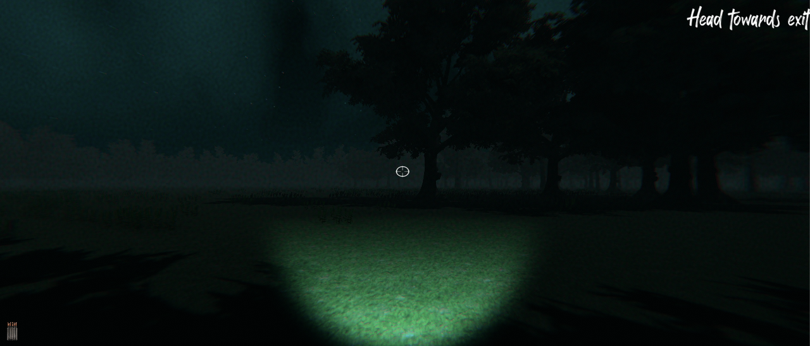
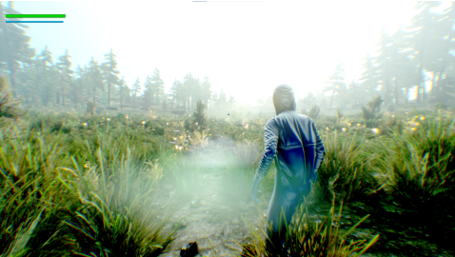
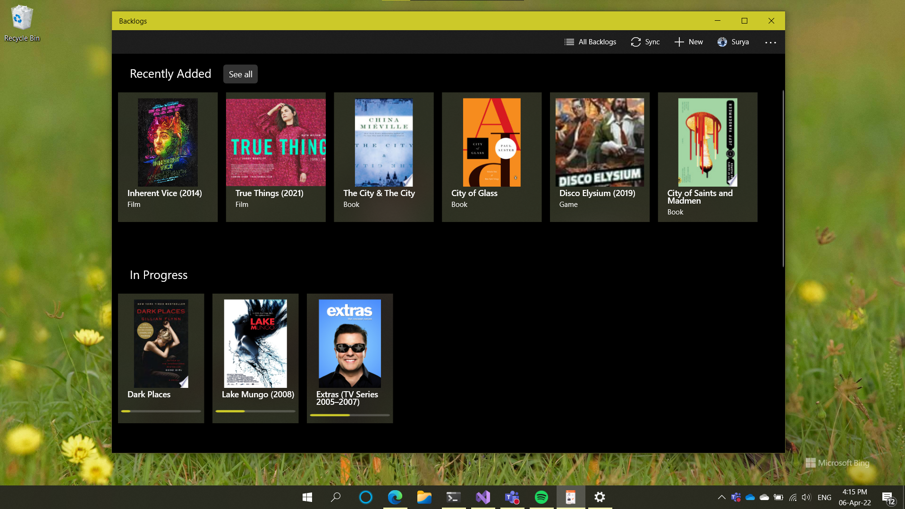

GAME
Theseus: The Descent is a first-person horror shooter made using the Unity Engine. The game has 3 chapters,
each one of them exploring a different aspect of game design and expanding the story.
The game has over 6,000 acquisitions
on the Microsoft Store from Xbox One and PC devices, with 23 5-star reviews.


Geoportals is a third-person shooter built using Unreal Engine 4. The gameplay involves shooting aliens, navigating the levels and finding portals. There are various enemy types, and each level has a different climate and atmosphere, each with different enemy variants
and types. The game supports Xbox controller and keyboard + mouse for input out of the box.

Backlogs is a native Windows application that lets you manage your film, TV, music, game and book backlogs all in one place. The app supports cross-device syncing across devices signed in with your Microsoft account.

The Inculcation is a mystery video game made using the Unity Engine. It follows a man who is on the lookout for his sister
who vanished after she went for a grieveing session after her best friend's death. The game involves finding clues and uncovering what happened to her.